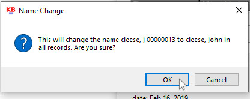

Editing Carrier Information
To make any changes in a specific carrier's information, you can use the "edit" button. This will be the case whatever you are changing whether it is the carrier's name, list status, route, etc. In the main screen, with the investigation range set, select the "edit" button next the name that you want to change.
The Time Dimension for Carrier Information
Since a carrier's attributes such as their route, list status, ns day and station changes over time, Klusterbox creates multiple records for carriers depending on the date. Klusterbox records and keeps this information so that different investigations from different time periods will be accurate. If a carrier gets on the OTDL in October, but gets off the OTDL on November 6, Klusterbox can record this and reflect this information in the investigations for October and November, both before and after the 6th, even if the 8th is in the middle of the week. To make this possible, all records will have an "effective date". It is shown as the first thing on the top of the screen when you press the "edit" button to update a carrier's information. When you press edit, the Edit Carrier Information screen defaults to show the
Changing a name
A screen titled "Edit Carrier Information" will appear. Edit/update the name in the field under "carrier name:" You can change the first name, last name or both. Note: The name attibute is the only attribute which is changed without regard to a particular time. For example: if you change the carrier's name in 2019, all previous instances of that name will be change for dates prior to 2019.
Possible Error: Entering a name which is already being used.If you enter a name which is already being used, you will get an error message as shown below. In this example a name is entered and the update button is pressed.
A messagebox will appear to ask you if you want to make the changes. Press OK or cancel.
In this case, the name you have selected is already being used by another carrier. You will be notified with a messgebox showing a warning. You will not be permitted to make this name change. You will have to change the name to something different.
Proceeding Without Errors: Make changes to the name field. Make sure the name is changed to a unique name, unlike any other name which is already in the system. Once finished, press the Update button .

A messagebox will appear asking if you are sure. Press "OK" to finalize the changes.

The carrier list will refresh to show the updated name. Here you can see it on line #4. The name change is complete
8 d. A window will open showing you the extracted files. To open Klusterbox, click on the application “Klusterbox.” This is how you will open Klusterbox from now on. Klusterbox does not appear on the start menu (maybe in future versions, but not now). The kb_sub folder contains files that Klusterbox needs to work properly. Make sure to not delete it and to keep it in the same folder as the Klusterbox app to ensure the program works correctly.

8 e. Create a shortcut: If you want to make accessing Klusterbox a little easier by creating a shortcut, then right click on the Klusterbox file. Select “Create Shortcut” on the menu. This will create a shortcut that you can drag to your Desktop for easy access.
9. (Optional) If you want to be sure that the program doesn’t contain a virus, visit www.virustotal.com and upload the Klusterbox file. The site scans whatever is uploaded to it with all the commercially available antivirus software programs. Klusterbox version 2 comes up clean in 70 different anti-virus programs – except for one false positive (just my luck) from an anti-virus I’ve never heard of Jiangmin which doesn’t respond when you report false positives.
If you have an anti-virus installed on your computer (I have Avast), you can right click on the klusterbox file and select “Scan selected items for viruses.” Even if you don’t take this step, the anti-virus should scan any executable file the first time you start it anyway.
10. Since this is the first time starting this program and because Windows doesn’t know that Klusterbox exist, you will get a warning from Windows.

If you get this prompt, click on the “More info” link. Only after that will you get the option to “Run Anyway.” Please press, “Run Anyway.”

11. Klusterbox should now open unless you have issues with Anti-Viruses. It that happens, see the section below called Anti-Virus Programs.
Anti-Virus Program Problems
There might be an issue with anti-virus programs. This was an issue with Klusterbox version 1.0, but not too much of a problem. I have Avast Anti-Virus. So the following will detail the conflicts that Avast has with Klusterbox and will show how to get things working properly. I don’t know how other anti-virus programs are going to interact with Klusterbox, but hopefully, this description will give you an idea of how to handle them.
First, the anti-virus program scans Klusterbox as the program is trying to open.

Once the scan is completed, a message will appear stating that no viruses were found. This appeared and disappeared before I could get a screen shot of it.
The next thing to happen is a prompt appears with an error message and Klusterbox shuts down. This looks pretty grim.

>
Immediately after that another prompt from Avast stating that Avast has stopped Klusterbox from writing to a document called Mandates.SQLITE. Mandates.SQLITE is a database which is created by Klusterbox when Klusterbox starts for the first time. About 50% of what Klusterbox does is reads and writes to the Mandates database. So by shutting down that channel of communication, Avast is crashing the program. To make sure the program can function without Avast shutting it down, press “Allow App.”

Once you press “Allow App” you will get a new prompt informing you that Klusterbox will now be allowed to access the database. That’s a good thing because it allows Klusterbox to operate.

Go ahead and press “Got It” and then close the “Fatal Error Detected” prompt by clicking “OK.”
Now you should be able to open Klusterbox by double clicking on the program.
If you are still getting problems, try shutting down the anti-virus program temporary. With Avast you can do this with by disabling the shield control by right clicking on the Avast Icon in the system tray. The selecting “Avast shields control” then “Disable for 10 minutes.”

Once the anti-virus program is disabled, then open Klusterbox. It should open. Once it is open you can turn the anti-virus program back on by following the same path you used to shut it off and selecting “Enable all shields.”
The problem is annoying but easy to fix and once you’ve got Klusterbox running, then you don’t have to worry about it anymore. Clearly this is some sort of bug with Avast Anit-Virus. It doesn’t make sense that the program is scanned, cleared and then prohibited from executing.
If you had to work though all these steps just to get Klusterbox to work on your computer, then thank you for your patience. It’s complex for an amateur like me because it’s not my program that’s crashing itself, it’s another program. I’m working to improve the program and I hope to iron out problems like these for the future.